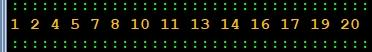

Ficha10_002
Excepto Múltiplos de 3
Escreva um algoritmo que imprima na consola todos os números entre 1 e 20 excepto os múltiplos de 3.
Utilize uma instrução "continuar"
|

|


Pseudocódigo
// Programador Ant0ni0 M@ns0 - Ant0ni0 M@ns0
inicio ProgramaPrincipal
iterar inteiro i de 1 até 21 passo 1
se i % 3 == 0 então
continuar
fim se
escrever i + " "
fim iterar
fim ProgramaPrincipal
//Pseudocódigo - Automatic translated by Algorithmi 22.05
//(c) Ant0nio M@nso quarta, 2022 out 12 19:26
Download Ficha10_002.txt
Algorithmi 22.05 Student version
(c) Antonio M@nso 2022
Instituto Politécnico de Tomar - All rights reserved